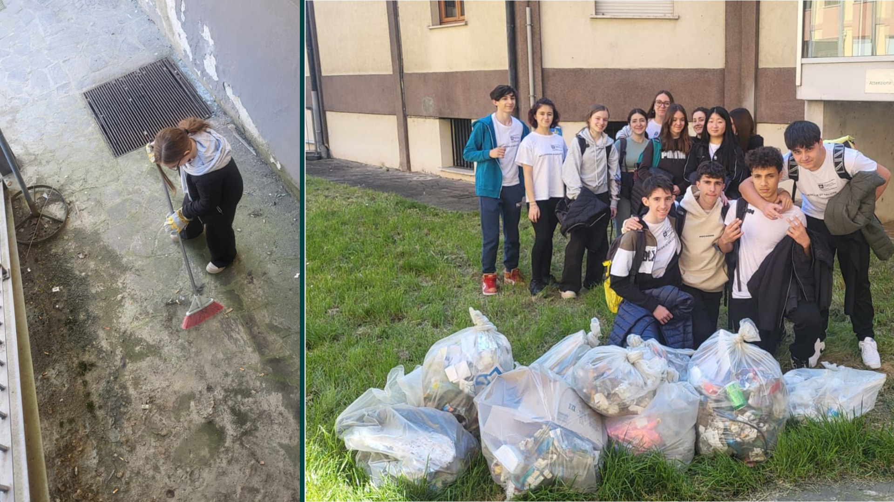

Tappa 26: Pulizia del Prato 🌱
Non solo cibo! Abbiamo deciso di agire concretamente per l'ambiente della nostra scuola. Ci siamo rimboccati le maniche e abbiamo pulito il giardino/prato scolastico, rendendolo un posto più bello e accogliente per tutti.
 ← Torna alla Timeline